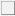

世界卫生组织调查，27%的人有睡眠问题。为唤起全民对睡眠重要性的认识，国际精神卫生组织于2001年发起了一项全球性的活动——将每年的3月21日，即春 季的第一天定为”世界睡眠日“。青海地区是失眠重灾区，据统计，成年人一年内的失眠患病率高达72%，而就诊的人数只占不到10%。对此中国人民解放军第536 医院失眠科专家提醒，若长时间失眠而忽视规范治疗，极有可能引发各类疾病并严重影响身体健康。
失眠症自评量表有14条文字，请仔细阅读每一条，然后根据您最近一星期的实际感觉，选择问题下方答案。
- 1、睡眠时间很不规律，不能按时上床睡眠。是  否
- 2、工作或娱乐至深夜。是 否
- 3、躺在床上脑子里全是白天见过的人和发生的事，难以入睡。是 否
- 4、入睡后稍有动静就能知道。是 否
- 5、整夜做梦，醒来时觉得很累。是 否
- 6、很早就醒来，而且再也睡不着了。是 否
- 7、有点不顺心的事就彻夜难眠。是 否
- 8、换个地方就难以入睡。是 否
- 9、一上夜班就睡眠不好。是 否
- 10、使用安眠药才能安然入睡。是 否
- 11、白天身体状况差（体力、精神等）是 否
- 12、无论睡多长时间，睡眠质量总是很差。是 否
- 13、早上睡不醒，白天情绪低。是 否
- 14、白天思睡。是 否
根据近两周以上的情况和感觉，请您对上述问题进行作答评分，回答是加"1"，回答否加"0"分:
如果有3分及以上，就说明你有失眠倾向； 如果有5分及以上，就说明你有失眠倾向；
如果有7分及以上，就说明你患有中度失眠； 如果有10分及以上，就说明你有失眠倾向
听听专家怎么说？ Experts how to say
2003年1月，世界卫生组织调查，27%的人有睡眠问题。为唤起全民对睡眠重要性的认识，国际精神卫生组织于2001年发起了一项全球性的活动——将每年的3月21日，即春 季的第一天定为”世界睡眠日“。青海地区是失眠重灾区，世界卫生组织调查，27%的人有睡眠问题。为唤起全民对睡眠重要性的认识，国际精神卫生组织于2001年发起了一项全球性的活动——将每年的3月21日，即春 季的第一天定为”世界睡眠日“。青海地区是失眠重灾区。
01 确诊：EFG精准检测
02 治疗：物理设备治疗
03 加强：中西医结合用药
04 巩固：心理咨询巩固疗效
01 全新检测技术迅速、精准
02 疗效更彻底
03 无创、无副作用、无复发
04 最高性价比
疗效4（满意） | 环境3 （很好） | 服务4 （满意）
牛专家果真医术高明啊，真心牛!
疗效4（满意） | 环境3 （很好） | 服务4 （满意）
牛专家果真医术高明啊，真心牛!
疗效4（满意） | 环境3 （很好） | 服务4 （满意）
牛专家果真医术高明啊，真心牛!

退伍军人：周明
病因：在部队经常晚上执勤，作息规律改变引发睡眠障碍。
病程：3年